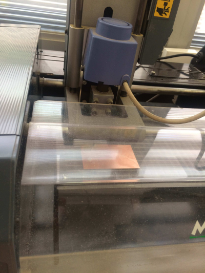
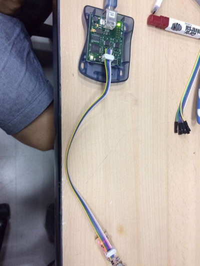

Design
This week assignment we have to solder our own FabISP. We are using pre-designed files and following the FabISP guide on the FabAcademy Archive. This version is Brian's FabISP model, using a ATtiny45 chip. As a personal note, this assigment was difficult for me because I don´t have much electronics background. Decide to use Brian's model because of the Tiny45 and easy to complete. Following Brian's model guide I could finish my programmer.
Roland MDX-20
Tecsup have this model for PCB production. Specs for this CNC can be found in this NASA paper about the machine. Also manufacturer's User guide can be downloaded here.
Fabmodules
MIT client software for machine using. I need to load a PNG file (exported from Eagle or the FabModule), and the sofware will create all traces and set correct width.
Setting up
First we need to download the PNG file from Brian's model guide. Next we need to load the FabModule. To load the program (Linux), have to Open "Terminal", type "sudo Fab" and enter the password. That will start the modules, from which select the process and the machine (milling and modela MDX). Once the program loads, we select the machine we are using, (Modela MDX-20) and then click on make_png_rml. Once the next window pop up, load the board PNG file and set our tool diameter. The FabModule allows to create the milling path (auto), trace width and speed. For my job I will set the machine to mill traces about 1/64" diamater, 3 mm/s speed and -0.08 z-axis depth. Finally we create the .rml file but before we need to place the toll on origin.
Origin
For origin setting, we place our substrate on the printer with double sided tape. Then change the "Xmin" and "Ymin" parameter to find physical 0 point. When defined, the tool is lowed to check correct tool penetration. Finally we send the job and CNC starts to work.
PCB Milling
Once the machine is working it is important to keep cheking periodically if it is doing right. Some problems that might occur are: tool breaking and substrate shifting. If something like that happens, the job has to sent again.

Cutting
When milling process has concluded, we have to trim the extra material in the board using a guillotine. It is important to pre heat the board with a heat gun to make the cutting easeier. After that, a little sanding to avoid splinters and voila!, the PCB is ready for soldering.
Soldering
First thing: Soldering training. I had to no experience with soldering electronics before, so started to solder some broken componentes to one of my discarded boards. Some tests later, started with my final board. Brian's guide detailed every component I had to use, so I could find everything for my self in the shelf. Finally after an hour I had my board ready.
I took a couple of hours to find the appropriate soldering technique. It is something you need to try for your self and can't be read in a book. It is important to check the work at least twice. Make sure the components are in the correct place and check for shorts with multimeter.
Programming
First thing is to download the firmware source code and extract the zip file. Find the code directory and run make, this will make the hex file that will be on the Tiny45. Next, we modify the programmer variable on the Makefile. I will be using a AVR programmer, so "avrisp2" is set on the variable. Now we plug the programmer to PC and connect the board to the programmer. Run "make flash" to programm the board. Several bars are shown on the screen and if everything is correct a green light should be display.

Testing
Connected my FabISP to my computer and it recognizes!